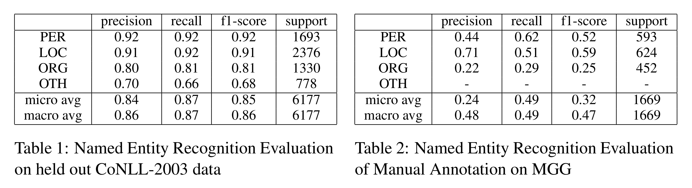
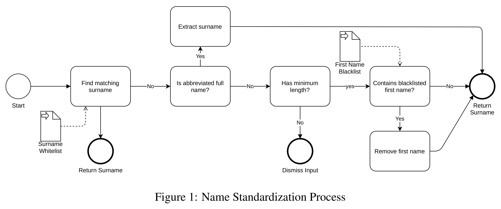
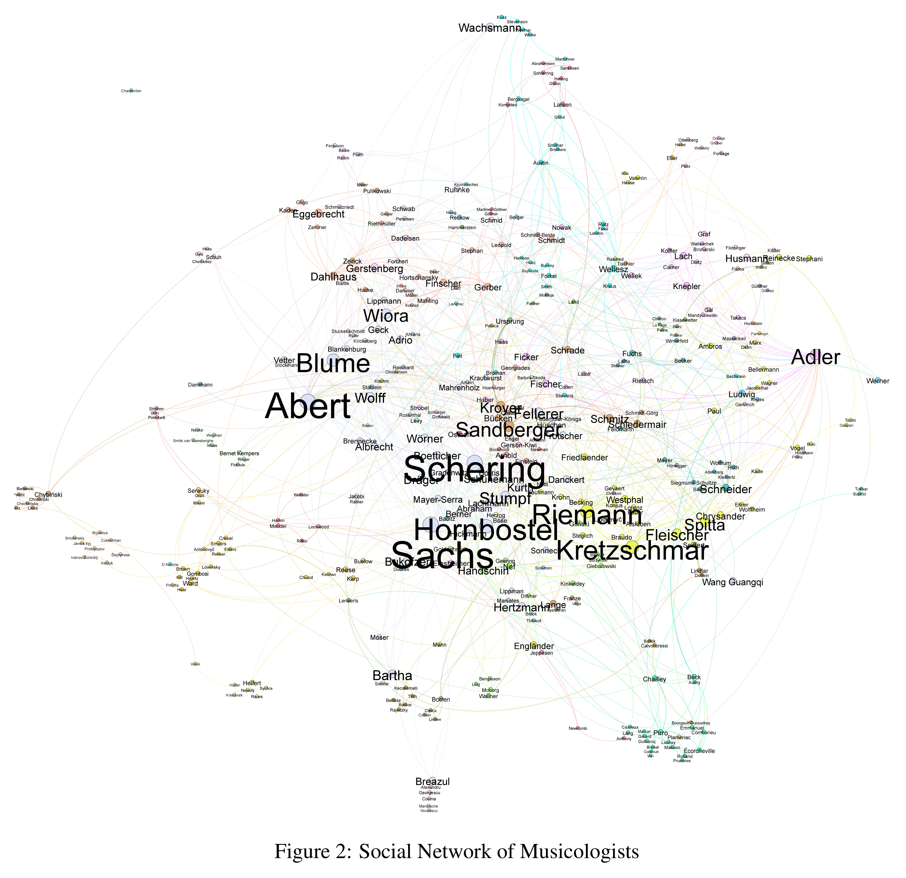
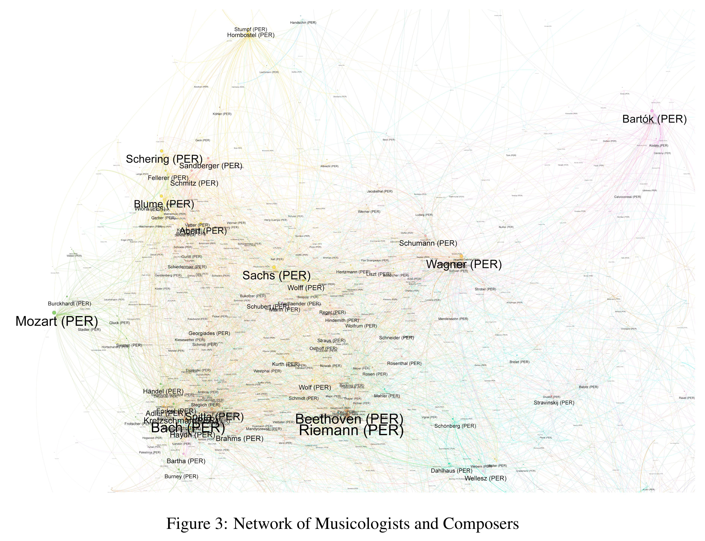

0 Abstract
To aid musicological research, we extract named entities from a German musicological encyclopedia (MGG), and link these entities in a social network by the entities that they co-occur with. We offer two network plots that reveal details about the history of musicology, of (a) musicologists that have a lexicon entry each, and (b) the composers that are mentioned in these entries.
1 Introduction
Over the 18th and 19th century the academic discipline of musicology had become a central stage for negotiating the value of certain music and aesthetics. These negotiations have also led to the exclusion and deprecation of particular cultural elements, be they issues, music, or people. This discourse has been reflected in the encyclopedia ‘Die Musik in Geschichte und Gegenwart’ (Music in History and Present, MGG, comparable to the New Grove Dictionary of Music and Musicians). It contains 1282 biographical entries of musicologists, representing the Germany centered Western European discourse on musicological knowledge of the last 120 years.
To analyze this text corpus at scale, we train a Named Entity Recognition (NER) system and manually annotate texts from the encyclopedia to evaluate the NER on the new domain. We then employ a name standardization and cleanup procedure to finally link the entities and draw plots according to the properties of the graphs. Previous manual annotations showed that we might expect data that enables us to analyze the professional network of musicologists exposed in the MGG Online (van Dyck-Hemming and Wald-Fuhrmann, 2019). The approach in this paper already gives us an overview of social groupings, main actors and most negotiated composers (van Dyck-Hemming and Wald-Fuhrmann, 2016; Latour, 2014).
2 Named Entities
In order to obtain a NER system, we tune a pre-trained BERT model (Devlin et al., 2018) on the CoNLL-2003 Named Entity Dataset (Sang and De Meulder, 2003) with the deepset.ai toolkit and achieve competitive performance on 10% held out data. See Table 1 for an overview of the F1-scores of our NER model on CoNLL-2003 itself and Table 2 for an evaluation on manual annotation of students.

Two students annotated around 3000 tokens with the classes Person (PER), Geopolitical Entity/Location (GPE/LOC), Organizations (ORG), other (OTH), temporal expressions (TIME), and professional field/discipline (FACH). We calculated Cohen’s kappa between the annotators on document level. Over all classes, agreement ranges between .5 and .8. When removing FACH, agreement increases to .7 to .95, suggesting that future research should implement proper guidelines for this label. Our best model achieves a F1-score of 85% on CoNLL-2003, but on the manual annotation (with TIME, FACH, OTH removed), it only achieves 47% F1-macro. Especially ORG is not reliably detected. Since manual inspection suggested good performance of the model for the other classes, we suspect that performance would benefit from (a) paying special attention to punctuation marks (commas, brackets) that are ubiquitous in encyclopedic articles (b) improved training of the annotators and tailoring the guidelines to the used model, and (c) domain adaptation of BERT. As recall for persons and locations is acceptable, we perform additional clean-up and standardization of names.
2.2 Name Standardization
For persons, we automatically remove all first names and thus only use surnames. See Figure 1 for an overview of the cleaning pipeline. Unfortunately, only relying on last names leads to the conflation of some names, e.g., Hermann and Amalie Abert, the latter being the first female academic musicologist in Germany.

3 Social Network
To construct a social network, we select a subset of names (either musicologists only, or musicologists and composers) as nodes and draw an undirected edge (connect) every name in a particular encyclopedia article only to the musicologist in the title of the article. The network visualization is performed with the software Gephi (Bastian et al., 2009). We focus on the Largest Connected Component (Newman, 2010) and discard nodes with a degree of less than three. The Modularity measure (Blondel et al., 2008) is used to color-encode modules within the network, while the Eigenvector Centrality (Newman, 2010) embraces nodes of higher importance by increasing the node (font) size to scale. Finally, we apply the OpenOrd (Martin et al., 2011) or ForceAtlas2 (Jacomyet al., 2014) layout algorithms to draw the final graphics. In addition to a layout, these algorithms produce a visual clustering that can give further insights.
3.1 Social Network of Influential Actors in Musicology
Figure 2 illustrates a graph of musicologists that are connected whenever they occur in each others biography, and select only names that also occur in the title of an encyclopedic article. We find a central group of researchers that minted German musicology. This group spans from Hermann and Amalie Abert over Arnold Schering, to Hugo Riemann and Heinrich Kretzschmar. The likewise important Erich Hornbostel and Curt Sachs represent the field of systematic musicology. Other researchers sharing their interests are grouped around them. Guido Adler, who is loosely connected to many names, likely because he founded the first institute of musicology in Vienna, drifted off center to house his students that are also connected to the center. We can even partly validate a study based on quantified historical data on Carl Dahlhaus and Hans Heinrich Eggebrecht who represent the two main figures of German musicology from 1965 to 1995. We observe a clear distinction between both researchers and are able to identify a significantly bigger group connected to the younger Dahlhaus.

3.2 Musicology and its Issue
In addition to the musicologists, the data basis of Figure 3 also includes all names of composers. Here, the visualization shows a network of musicology and its main issues (as composers are only connected to the musicologists, but not directly to each other). Composers from the Bach-family and Mozart are the issues of musicology as an academic discipline. So, the overwhelming dominance of names like ‘Mozart’, ‘Bach’, ‘Beethoven’ and ‘Wagner’ represent the dominance of the research that musicologists have done on these composers and their music. Especially Bach resp. the Bach-family seems to be the one issue deeply connected to the earliest and most important musicologists namely Johann Forkel, Philip Spitta, and Guido Adler. Moreover, there are numerous edges (identifiable via color) linking this group with younger musicologists like Arnold Schering, Hermann Abert, Friedrich Blume and others who shaped musicology of the 1920s.

4 Conclusion
We presented a first study of a clearly defined corpus of prosopographical texts, from which we extracted Named Entities and linked these to visualize the social network of musicologists and their relations to certain issues: the composers. This synchronic approach is already useful for historical research to confirm hypotheses that were previously drawn from arduous manual work. Regarding musicology, we could confirm quantitatively what we expected and already knew from conventional historical research. The overwhelming dominance of a few composers also allows us to reflect about the knowledge standards that musicology has so far relied upon.
Bastian, M., Heymann, S., and Jacomy, M. (2009). Gephi: An open source software for exploring and manipulating networks.
Blondel, V. D., Guillaume, J.-L., Lambiotte, R., and Lefebvre, E. (2008). Fast unfolding of communities in large networks. Journal of Statistical Mechanics: Theory and Experiment, 2008(10):P10008.
Devlin, J., Chang, M.-W., Lee, K., and Toutanova, K. (2018). Bert: Pre-training of deep bidirectional transformers for language understanding. arXiv preprint arXiv:1810.04805.
Jacomy, M., Venturini, T., Heymann, S., and Bastian, M. (2014). Forceatlas2, a continuous graph layout algorithm for handy network visualization designed for the gephi software. PLOS ONE, 9(6):1–12.
Latour, B. (2014). Reassembling the social—An Introduction to Actor-Network-Theory. Oxford University Press, 3 edition.
Martin, S., Brown, W., Klavans, R., and Boyack, K. (2011). Openord: An open-source toolbox for large graph layout. Proc SPIE, 7868:786806.
Newman, M. (2010). Networks: An Introduction. Oxford University Press, Inc., USA.
Sang, E. F. and De Meulder, F. (2003). Introduction to the conll-2003 shared task: Language-independent named entity recognition. arXiv preprint cs/0306050.
van Dyck-Hemming, A. and Wald-Fuhrmann, M. (2016). Vom datum zum historischen zusammenhang:
M¨oglichkeiten und grenzen einer fachgeschichtlichen datenbank. In Wissenskulturen der Musikwissenschaft. Generationen–Netzwerke–Denkstrukturen, pages 261–278. transcript.
van Dyck-Hemming, A. And Wald-Fuhrmann, M. (2019). Ansätze zur analyse sozialer netzwerke in der musikwissenschaft mit hilfe von graphentechnologie. Poster presented at the Jahrestagung der Gesellschaft f¨ur Musikforschung, university of Paderborn/Detmold 2019.